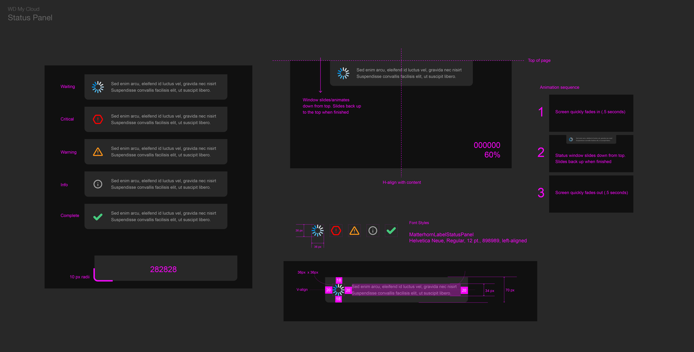
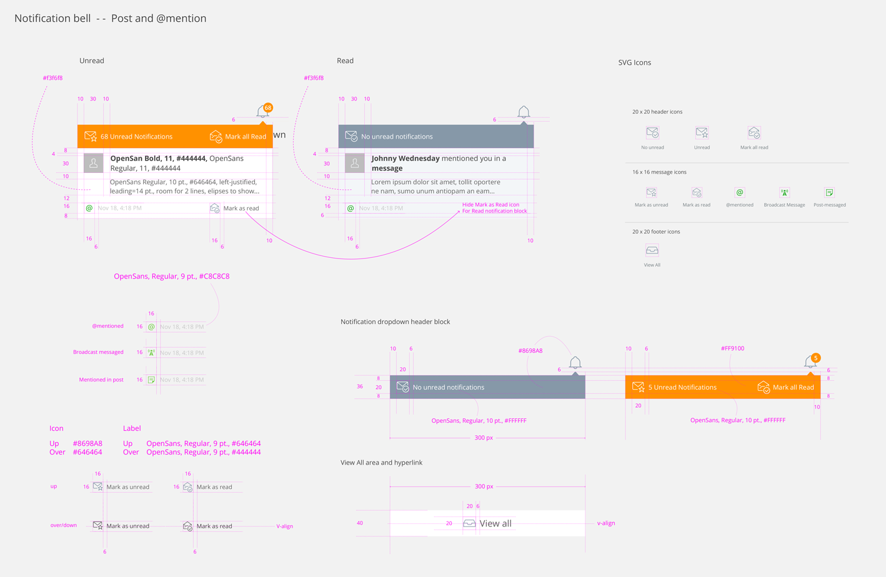
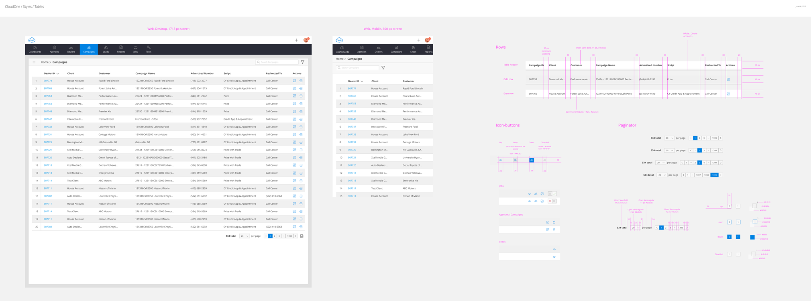
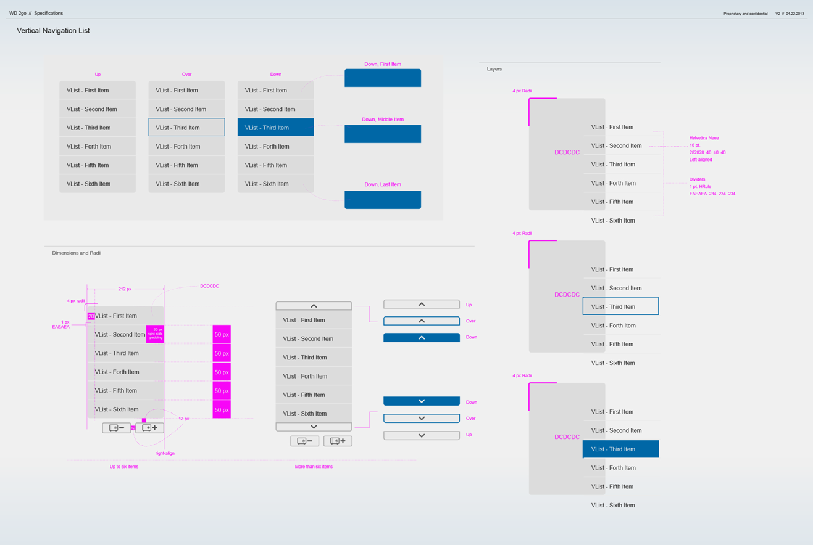
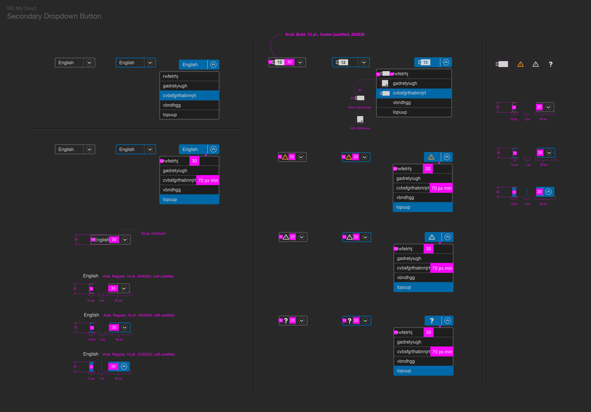
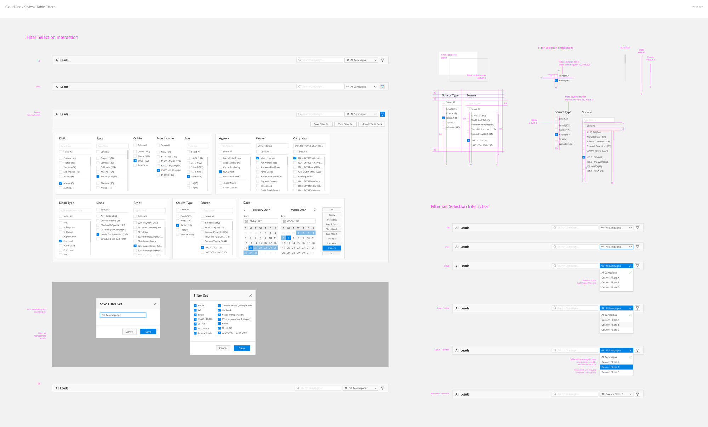

WD MyCloud Media Storage Desktop App
A production specification book for the MyCloud desktop media application, detailing component structures and UI behavior required for a reliable, cohesive desktop product experience.
OPEN SPEC BOOKOver the years, I invested deeply in the craft of diligently and methodically building granulated, chiseled UI components and component styleguides for my development teams. I took, and still take, pride in the research, study, and magnified focus needed to create specifications that are practical, scalable, and precise. This work demanded long hours with teammates and customers, testing component efficacy to the last pixel to ensure quality, consistency, and delight.
Specifications are not administrative artifacts. They are product quality systems. At their best, they reduce ambiguity, protect brand consistency, accelerate engineering handoff, and help teams ship interfaces that feel coherent across an entire product family.
My approach was always hands-on: define clear component behaviors, document edge states, stress-test in implementation, and validate with users and partners in real workflows.
Every component spec had to be directly useful to engineers with measurable spacing, typography, states, and interaction rules.
Specs were validated in real product builds, with iterative QA and cross-team reviews to ensure pixel-perfect outcomes.
The objective was consistent UX and visual language across desktop, mobile, platform modules, and brand touchpoints.
These images are representative snapshots from Western Digital, VMware Socialcast, and CloudOne specification efforts. Full styleguide books remain available in Section 02 below.







Below are five specification use cases spanning Western Digital, VMware Socialcast, and CloudOne. Each book captures a specific product challenge and the UI system decisions that supported development quality and consistency.
A production specification book for the MyCloud desktop media application, detailing component structures and UI behavior required for a reliable, cohesive desktop product experience.
OPEN SPEC BOOKA mobile-focused specification system for customers managing media files on MyCloud NAS devices, with attention to clarity, portability, and touch-first interaction consistency.
OPEN SPEC BOOKA cross-product UI and brand alignment specification built to unify visual language and component behavior across the Western Digital digital product portfolio.
OPEN SPEC BOOKA UI/UX specification framework for Socialcast, VMware’s collaboration and communication platform, supporting consistent interaction patterns across social and chat surfaces.
OPEN SPEC BOOKA UI/UX styleguide for the CloudOne CRM platform redesign, documenting scalable component patterns to keep dealership and media workflows visually and behaviorally consistent.
OPEN SPEC BOOKThis specification practice improved design-to-development clarity, reduced implementation drift, and enabled stronger product family cohesion across companies and platforms. More importantly, it created a repeatable quality standard teams could trust and customers could feel.
← Return to design case studies